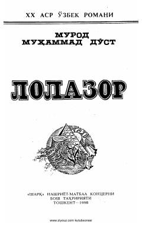

LXX asr o'zbek adabiyotining mumtoz namunalaridan biri bo'lgan mashhur roman.
Murod Muhammad Do'stning ushbu mashhur romani o'zbek adabiyotining XX asrdagi yirik namunalaridan biridir. Asarda jamiyatdagi murakkab ijtimoiy-siyosiy jarayonlar, shaxs va uning ma'naviy qiyofasi chuqur badiiy tahlil etiladi. Kitob o'quvchini insoniy munosabatlar va davr muammolari haqida mushohada yuritishga undaydi.